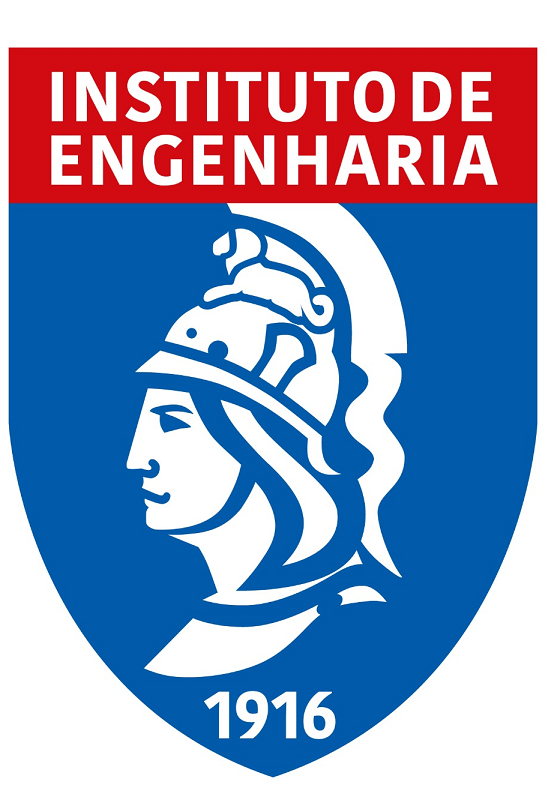

Nosso projeto visa implementar um plantão de dúvidas de matemática em uma das estações de
metrô da cidade,
em uma iniciativa inovadora que une educação e mobilidade urbana. Em parceria com o
Instituto Mauá de Tecnologia,
o
Metrô
e o
Instituto de
Engenharia,
buscamos oferecer suporte direto a estudantes e profissionais que enfrentam desafios em matemática,
transformando o trajeto diário em uma oportunidade de aprendizado. Este projeto não apenas visa
esclarecer dúvidas e fortalecer o conhecimento matemático,
mas também promover a educação de forma acessível e prática, contribuindo para o desenvolvimento da
comunidade.
Estamos empolgados com a possibilidade de levar a matemática a todos, tornando o aprendizado uma parte
integral da experiência cotidiana no transporte público.
Aqui estão mostradas imagens do funcionamento do projeto, um ambiente acessivel e interativo para que todos possam visita-lo...


O projeto é realizado na estação Sacoma, na Linha 2-Verde do metrô de São Paulo. Localizado em um ponto de fácil acesso, o projeto conta com uma equipe de educadores e monitores especializados, prontos para ajudar a esclarecer dúvidas matemáticas de forma gratuita e acessível. O espaço foi projetado para acolher estudantes de diferentes níveis de ensino, com um ambiente preparado para tirar dúvidas e oferecer dicas práticas. A localização estratégica na estação Sacomã permite que os usuários do transporte público consigam usufruir do serviço de maneira conveniente, entre um compromisso e outro, ou até mesmo em horários de maior deslocamento. Ao colocar a matemática ao alcance de todos, o projeto busca contribuir para uma aprendizagem mais inclusiva e fortalecer o conhecimento dos usuários que utilizam a Linha 2-Verde.
Temos três principais parceiros que tornam nosso projeto possível, sendo eles...
O Instituto Mauá de Tecnologia (IMT) é uma instituição de ensino superior e pesquisa localizada em São Caetano do Sul, São Paulo, reconhecida pela sua excelência na formação em áreas de engenharia, administração e design. Fundado em 1961, o IMT é renomado por seu foco em inovação e aplicação prática, oferecendo infraestrutura de ponta e laboratórios modernos para seus alunos. A instituição busca preparar profissionais altamente qualificados, promovendo uma educação voltada ao desenvolvimento tecnológico e à resolução de problemas reais da indústria e da sociedade.

O Instituto de Engenharia (IE) mantém uma parceria significativa com o Instituto Mauá de Tecnologia (IMT), unindo suas forças para fortalecer o desenvolvimento tecnológico e a formação de profissionais altamente capacitados no Brasil. Essa colaboração envolve projetos de pesquisa e inovação, além da realização de eventos, palestras e workshops que promovem o intercâmbio de conhecimento entre acadêmicos, estudantes e profissionais do setor.
Por meio dessa aliança, o Metrô, o IE e o IMT buscam criar soluções para os desafios da engenharia, impulsionando a aplicação prática dos conhecimentos em áreas como infraestrutura, sustentabilidade e tecnologia. Essa parceria reforça o compromisso de ambas as instituições com a excelência na engenharia e contribui para o progresso técnico e científico no país, oferecendo aos estudantes e profissionais oportunidades únicas de aprendizado e networking.